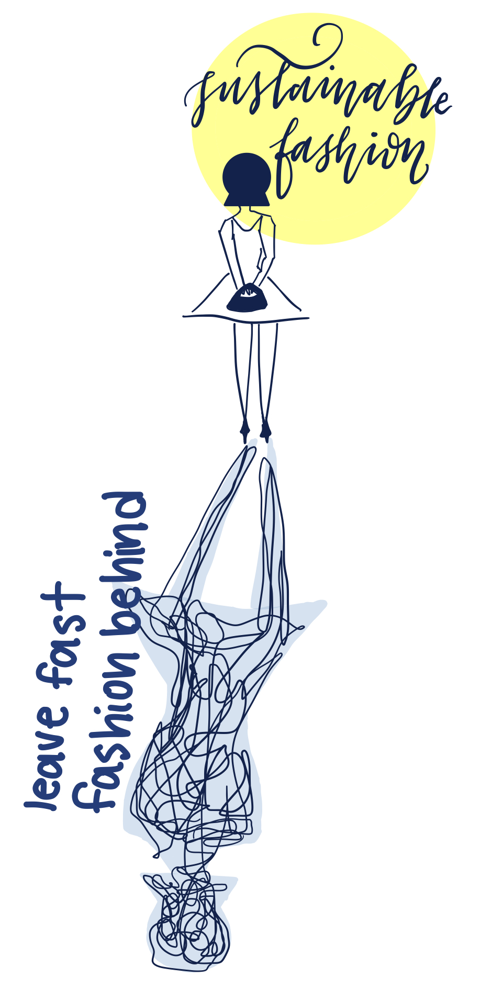

Reducing your Environmental Fast Fashion Footprint
If the earth can change, why can't we?
- 85% of textiles end up in dumps per year.
- The equivalent of one garbage truck full of clothes is burned or dumped in a landfill every second.
- Beyond this, the fast fashion industry leads to hundreds of thousands of microfibers being thrown into the ocean each year, the equivalent of 50 billion plastic bottles.
- It’s the second largest consumer industry of water, requiring about 700 gallons to produce one cotton shirt and 2 000 gallons of water to produce a pair of jeans, according to Earth.org.
Reducing your Environmental Fast Fashion Footprint
Fast fashion is defined as a highly profitable business model based on replicating trendy and high-fashion designs, and mass-producing them at low cost’. Its demand has drastically increased as more and more people desire the latest fashion trends for a lower price tag. As much as we love strolling through our favorite stores and seeing affordable, cute outfits along the aisles, we need to acknowledge the hidden cost that fast fashion evokes on our planet:
The fashion industry emits more carbon than international flights and maritime shipping combined, its consequences extending to creating 10 percent of the world’s carbon emissions. Clothing production has nearly doubled in the last decade, and yet we only keep the clothes for half as long.
Here are some statistics on just how much our fashion consumerism harms the environment :

Convinced and want to help?
Here are a few tips to help reduce your personal fast fashion footprint
1. Buy Less !
The want for overindulgence rooted in the mannerisms of first world inhabitants urges people to both buy and spend much more than they need. Do you really need 10 pairs of jeans? 20 pairs of shoes? We tend to want to think that buying clothes makes us happy. Maybe it’s time we reconsider our mentalities and start thinking about the environment.
2. Buy Better Quality Clothes.
What’s the point in buying cheap garments if you know you will throw them out in the next few months? If everyone collectively stops buying low quality clothes, it’ll push companies to start making quality clothes that with a lower environmental footprint.

3. Or Look into Sustainable Brands
As environmental awareness increases, more and more brands take their environmental footprint into account. Not all fashion brands contribute to the deprivation of the environment. In fact, a large number of companies are emerging with more sustainable initiatives to help reduce textile pollution, such as implementing more organic ways of growing cotton.
Some fashion brands that are using environmentally responsible tactics, as well as offering affordable and contemporary clothing, include Pact, Boody, Ecovibe, MadeWell, and Able. These socially and environmentally conscious brands prioritize the use of organic and sustainable materials such as recycled cotton, organic bamboo, and hemp, which typically last longer than synthetic fibers.
If these brands don’t fit your style, there are many alternatives that include buying vintage or second-hand clothing from sites such as Poshmark, Ebay, Etsy, and Depop.
Do your research! Look into the organizations named above and other environmentally-friendly brands, preferably local or nearby ones.
4. Think twice before throwing out your clothes!
Chances are there’s probably a friend or family member that’s looking for the exact thing you’re trying to get rid of - given it’s in decent condition of course. Ask around!
And if you can’t find somebody willing to take it, just drop it off at one at one of Florida’s many donate centers. Not only would you be minimizing waste (and therefore your environmental footprint), but you would also be supporting a larger cause for those who need it most! Below are some of the links with their information:
For any questions about what you can and cannot donate, click here → Click here to obtain more information about just a few of the most well-known sustainable clothing brands that are betting against fast fashion.
Can’t Donate it? Recycle it! Textiles can be recycled to make new clothing.
5. Keep an eye on your washing!


Bear in mind that as consumers, we are at the core of the fashion industry’s decisions and have a responsibility to our planet.
Remember, change starts with you.
Eco-friendliness is not just an escape from a catastrophic future, but also as a road towards a brighter one. There is no planet B, so let’s work together to preserve the world we live in.
- Planet Programers